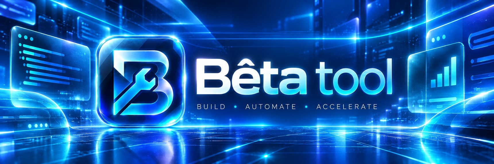

Bonjour 👋
Choisis un outil. Tout se passe sur ton NAS, rien ne part sur Internet.
Téléchargeur
Colle un lien, récupère la vidéo ou la musique en meilleure qualité, directement sur le NAS.
Convertisseur
Transforme n'importe quel fichier : vidéo, audio, image, document, e-book… plus de 60 formats.
Studio PDF
Modifie, signe, remplis, organise, fusionne, compresse et protège tes PDF.
Bêta Work
Ta suite bureautique : documents, tableurs et présentations, compatibles Word, Excel et PowerPoint.
Décompresseur
Ouvre un ZIP, RAR ou 7Z, choisis les fichiers et extrais-les sur le NAS ou ton appareil.
Dans le menu ou ci-dessus.
Le bouton « Aide » explique chaque étape.
Le bouton « Suggestion » est là pour ça.
Téléchargeur
Vidéos et musiques en meilleure qualité, directement sur le NAS.
Convertisseur
Plus de 60 formats : vidéo, audio, image, PDF, bureautique, e-books.
Formats pris en charge
Studio PDF
Tout pour lire, modifier, signer et transformer tes PDF.
Décompresseur
ZIP, RAR, 7Z, TAR.GZ… : choisis les fichiers et extrais-les où tu veux.
Bêta Work
Documents, tableurs et présentations, directement dans ton navigateur.
Suggestions
Les idées et retours envoyés depuis le site.